Programación WEB
Programación WEB
Instalación de un servidor web local, para trabajar con php y bases de datos de manera sencilla.
Esto no permite ejecutar el código php, crear y manejar bases de datos sin tener que subirlas a un servidor remoto o hosting.
Nos permite ejecutar código php y probarlo de manera agil.
En este caso vamos a trabajar con XAMPP para Windows.
Abrimos nuestro buscador en el navegador y colocamos xampp o lo podemos descargar directamente del siguiente enlace: Descarga XAMPP
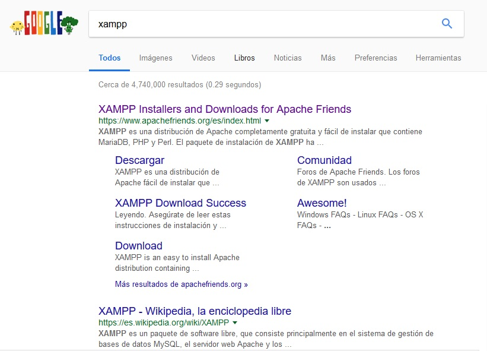
Xampp es un servidor web compuesto de Apache, MariaDB y Php.
MariaDB es el sustituto de MySQL y trabajan de la misma forma, por lo tanto no debemos preocuparnos.
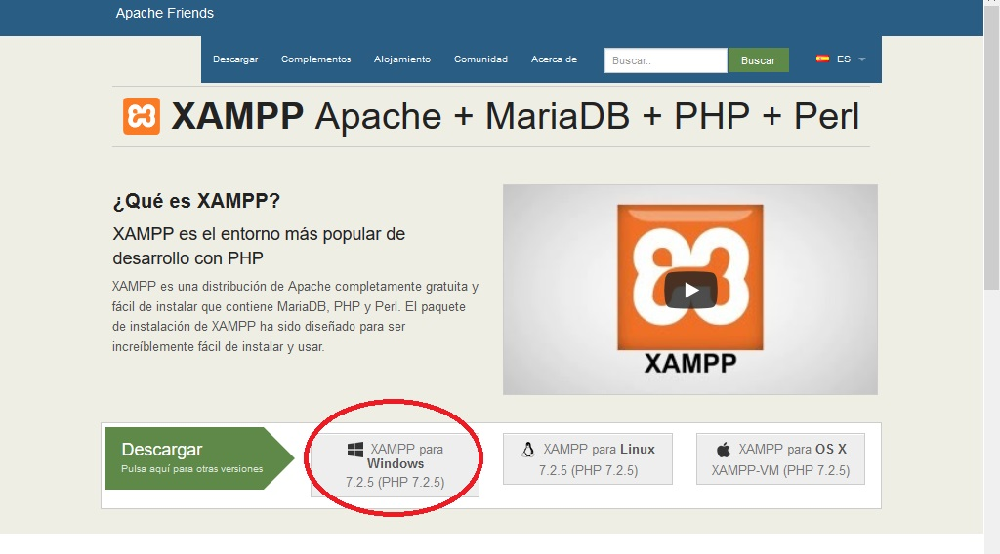
Damos descargar en xampp para Windows y guardamos el instalador. 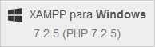
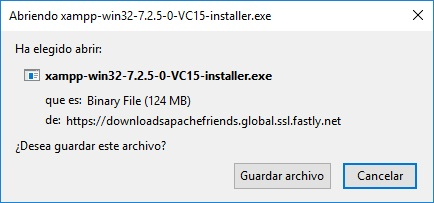
Una vez descargado, lo abrimos como administrador y damos permisos en lo que solicite durante la instalación, para no tener inconvenientes, en lo que corresponde con puertos y demás.

Si nos sale este error es porque tenemos que tener activado el control de administrador como lo mencione anteriormente.
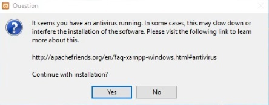
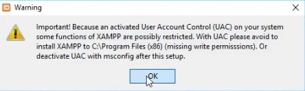
Damos click en siguiente.
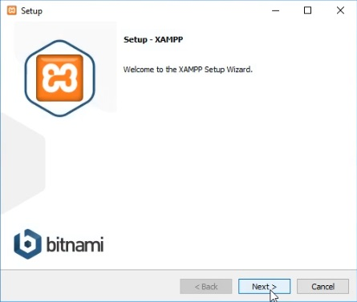
Seleccionamos todas las opciones y damos click en siguiente.
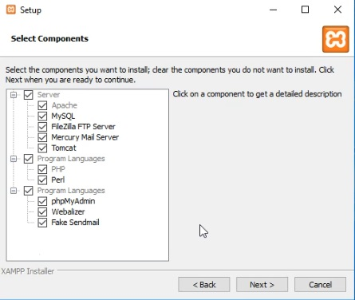
Aquí podemos cambiar el directorio de instalación, pero se recomienda dejar esta opción por defecto.
Damos click en siguiente.
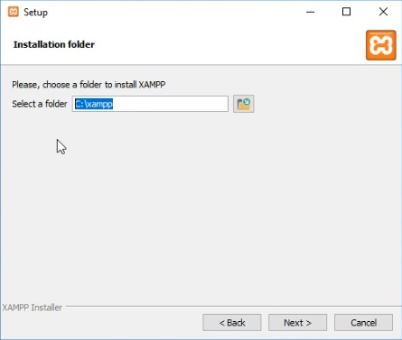
Quitamos la selección de estos componentes adicionales.
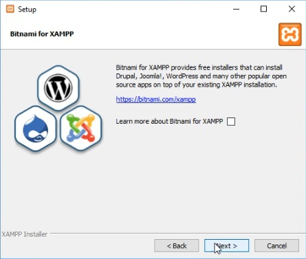
Damos en siguiente, Hasta que comience la instalación, que puede tardar algunos minutos.
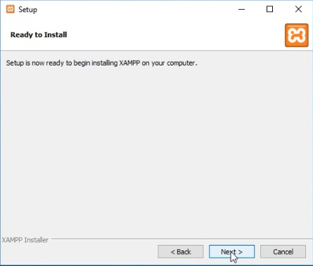

Damos permisos.
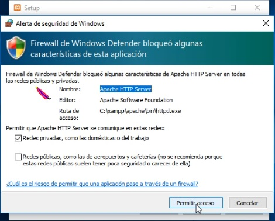
Después de terminada la instalación, nos aparece esta opción, la cual no seleccionaremos, para que no abra automáticamente el panel de control y abrirlo de forma manual, debido a que lo necesitamos en futuras ocasiones.
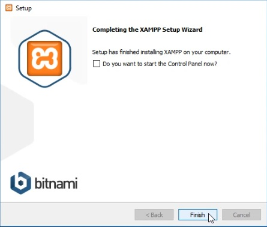
De esta manera vamos a inicio y buscamos xampp
Le damos click de derecho, abrimos como administrador y le damos los permisos que necesite y se nos abrirá nuestro panel de control.
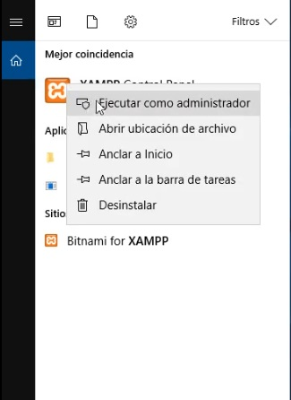
En este panel de control tenemos que iniciar los servicios de apache y Mysql.
Por defecto apache aparece iniciado, caso de no estarlo simplemente le damos start para iniciar el servicio y hacemos lo mismo para MySQL.
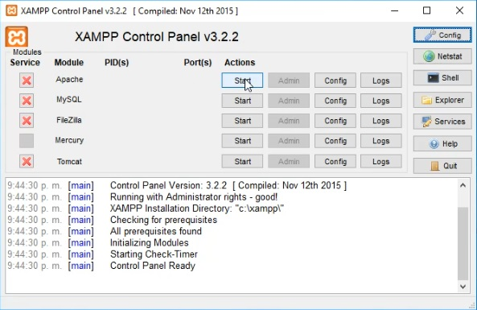
Después iniciado nos muestra los puertos que usa cada uno en caso de presentarse un error debemos revisar que otras aplicaciones que tenemos instaladas en nuestro PC, están ocupando o usando los mismo puertos.
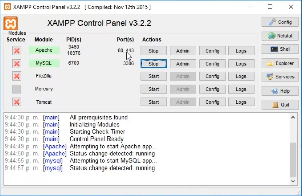
Este panel de control debemos abrirlo e iniciar los servicios cada vez que necesitemos trabajar con Php y MySQL.
Ahora vamos a nuestra carpeta de instalación que por defecto está ubicada en C:\xampp donde encontraremos la carpeta “htdocs” que es el directorio donde colocaremos todos nuestros proyectos web.
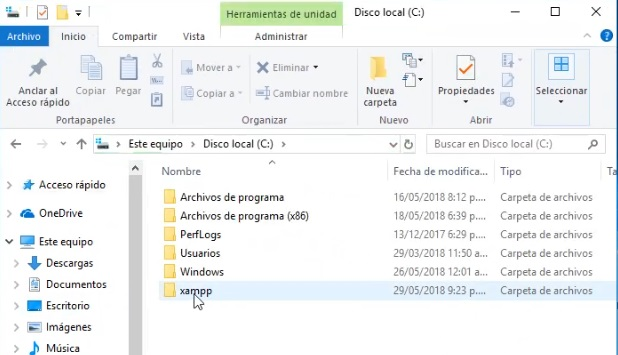
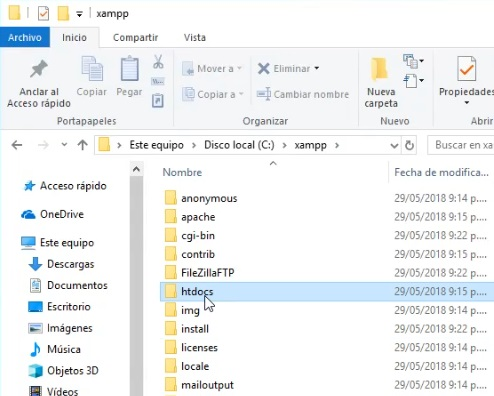
Vamos a probar si esta funcionando nuestro servidor web.
Abrimos nuestro navegador y colocamos http://localhost , nos debe aparecer la siguiente pantalla, la cual indica que nuestro servidor está funcionando correctamente.
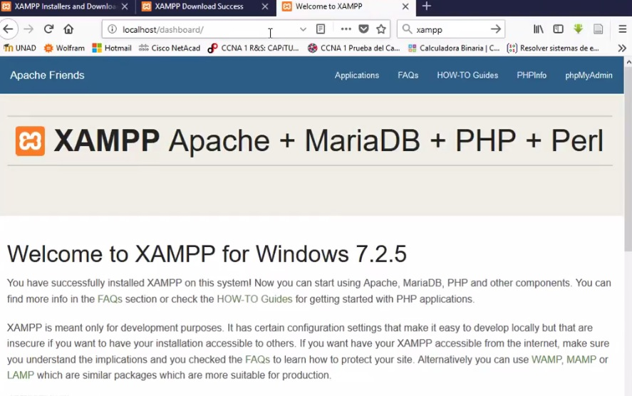
Ahora colocaremos nuestro proyecto en la carpeta raíz.
Creamos una carpeta para los archivos de instalación y colocamos el proyecto.
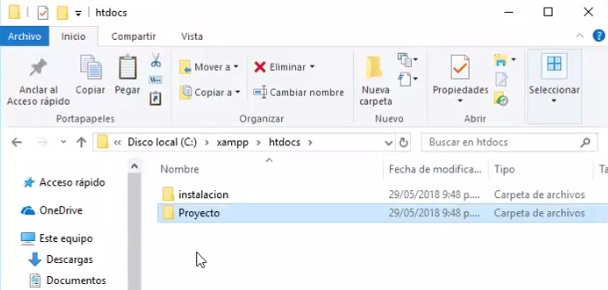
Una vez realizado esto, volvemos a nuestro navegador y actualizamos la página o colocamos nuevamente http://localhost.
Nos parecerán dos carpetas a las cuales podemos acceder, la de instalación que nos muestra la información inicial que revisamos momentos atrás y la de nuestro proyecto web.
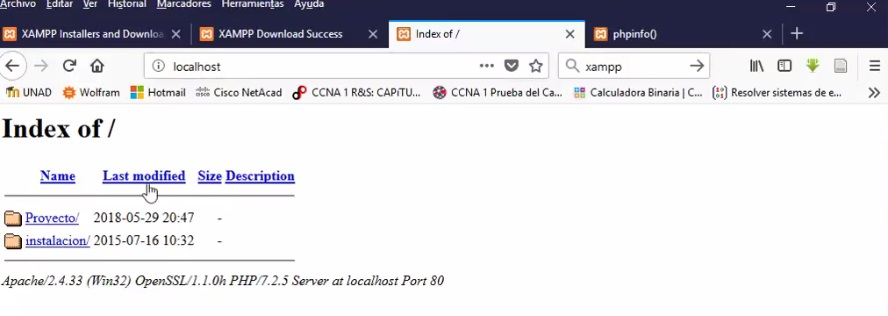
Carpeta de instalación
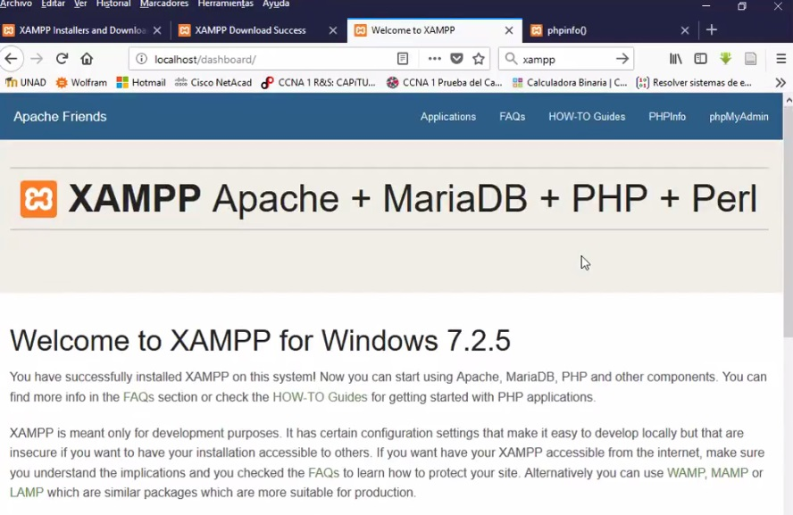
Carpeta de nuestro Proyecto.
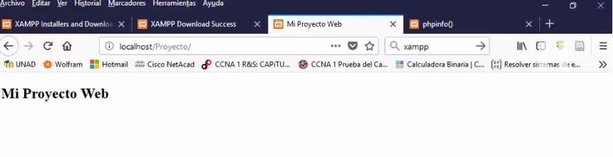
Y con esto ya tenemos un servidor web instalado.